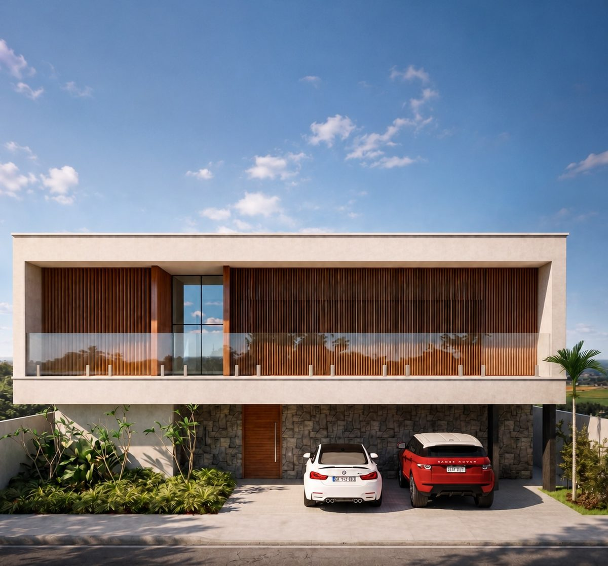
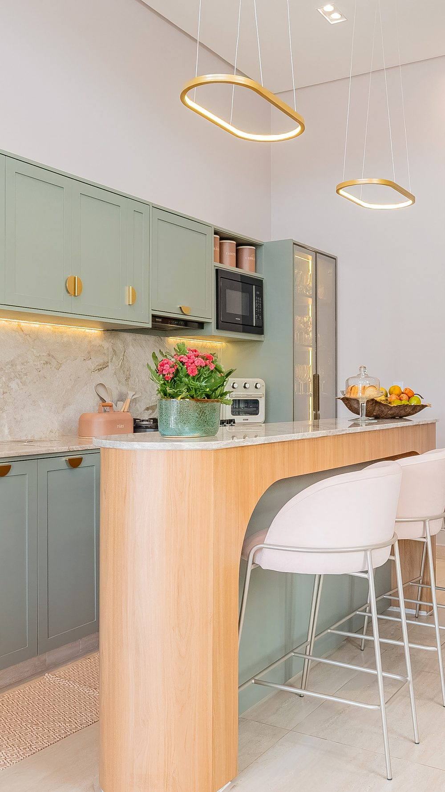
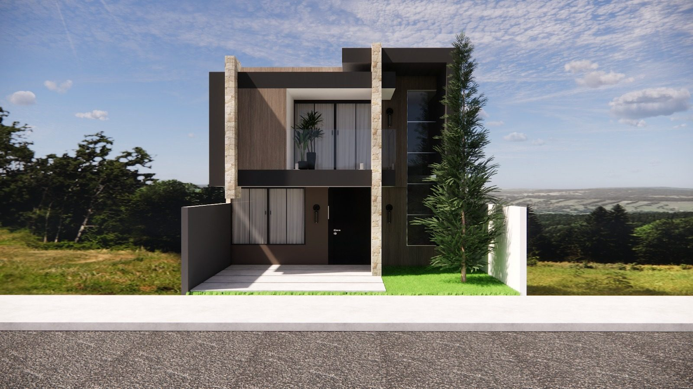
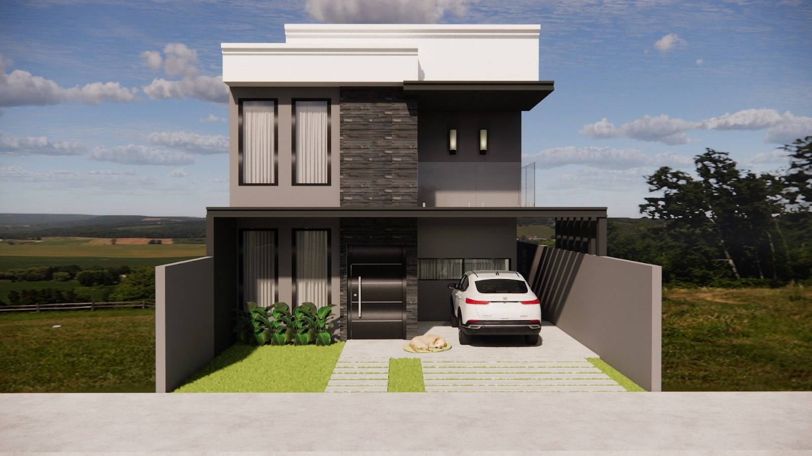
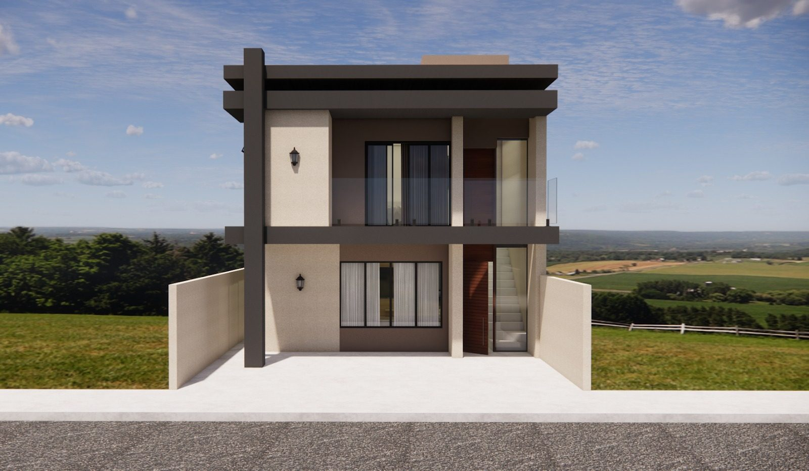

Início · Projetos
Projetos: o que já saiu da prancheta.
Imagens publicadas pelo próprio escritório no Instagram e no perfil do Google. Quase todas são estudos em 3D — renders feitos para ver a casa antes de construir —, identificados como tal. A cozinha é foto de obra entregue.
Galeria
O portfólio









Use os filtros para ver sobrados, casas e interiores. Nenhuma imagem leva nome ou endereço de cliente.
Estudo em 3D
O que é um estudo em 3D
Render é uma imagem gerada no computador a partir do modelo tridimensional do projeto. Ele mostra volumes, materiais, luz e vegetação antes da obra — e ajuda a decidir com calma: trocar um revestimento ou a cor de uma esquadria no 3D custa bem menos do que no canteiro.
Por isso, quase todo o portfólio público do escritório é de estudos em 3D. Eles mostram o desenho, não a obra pronta.
Nesta prévia, cada render aparece marcado como “estudo em 3D”. A cozinha verde-sálvia é a foto de obra entregue.
Foto de obra entregue
A cozinha entregue
Marcenaria em verde-sálvia, ilha em madeira clara de canto arredondado e pendentes de luz. Sobre essa casa, o escritório escreveu:
“Nesta residência, a personalização do quadro nasceu justamente desse propósito: criar algo que dialogasse com quem habita a casa”
Nobrato Arquitetura no InstagramEstudo em 3D
Uma residência contemporânea
“Uma residência onde linhas contemporâneas, materiais naturais e proporções cuidadosamente pensadas se encontram para criar uma arquitetura elegante, atemporal e cheia de personalidade.”
Nobrato Arquitetura no InstagramMais no Instagram
O escritório publica projetos, bastidores e explicações no @nobratoarquitetura. Ali também ficam os destaques “Projetos”, “Apto Viver” e “Depoimentos”.
Dúvidas frequentes
Perguntas comuns
As imagens são de obras prontas?
A maioria é estudo em 3D (render) do escritório. A cozinha verde-sálvia é foto de obra entregue.
Posso ver o projeto em 3D antes de construir?
O estudo em 3D aparece em muitos projetos do escritório. O que entra no seu projeto é combinado em reunião.
O escritório faz apartamentos?
No Instagram há um destaque chamado “Apto Viver”. Conte o seu caso pelo WhatsApp.
Vamos conversar
Todo projeto começa numa conversa.
Conte o que você quer construir ou transformar. O escritório fica na Paralela, em Salvador, e atende em todo o Brasil. WhatsApp (71) 99121-3756.